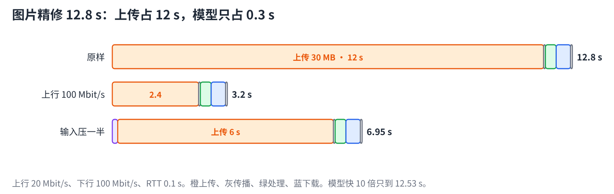
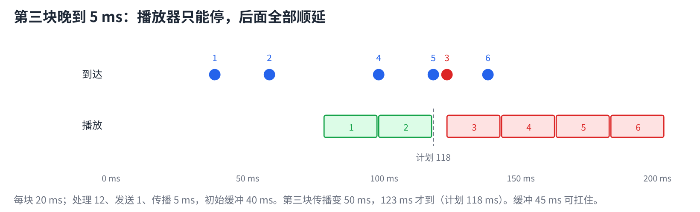
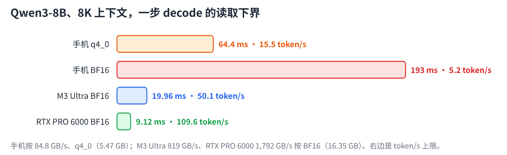
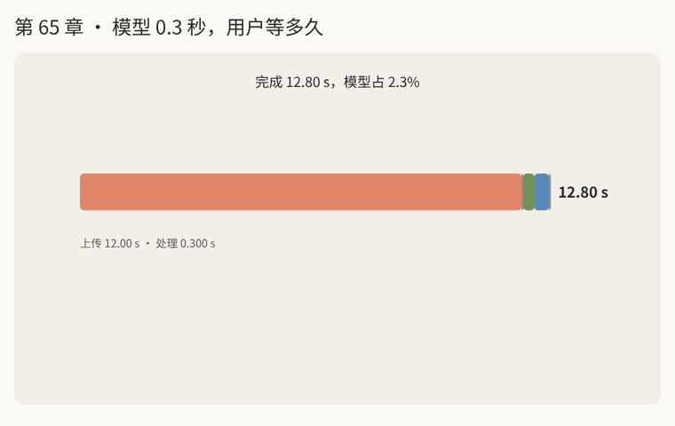

第 65 章 · 从模型运行时间到完整交互时间：模型 0.3 秒，用户等 12.8 秒
本地运行
git clone https://github.com/wikieden/ai-infra-from-constraints
cd ai-infra-from-constraints/code/notebooks
pip install jupyterlab torch numpy
jupyter lab ch65_interaction_time.ipynb也可以下载后直接用 VS Code 打开 .ipynb 运行。需要 GPU 的章节在 Colab 里选「代码执行程序 → 更改运行时类型 → GPU」。
本章回答：一张图交给云端精修，模型只跑 0.3 秒，用户为什么要等 12.8 秒？把模型加速十倍和把输入压一半，哪个更值？实时语音为什么平均带宽够也会卡顿？截图 Agent 压缩截图能省多少，最多能多出几轮纠错？一部旗舰手机跑 8B 模型每秒能出几个 token、能放多长上下文、耗多少电？
讲解日期：2026-11-24 · 上一章：第 64 章 模型服务的选择、成本与扩容 · 下一章：第 66 章 跨设备分工与会话迁移
对应原文：materials/ai-infra-book/manuscripts/12-端边云协同.md章首 L1–L7、§12.1 L9–L201（图 12-1 至 12-9）
本章缩写：RTT = Round-Trip Time（往返 / 时间）· ASR = Automatic Speech Recognition（自动 / 语音 / 识别）· TTS = Text-To-Speech（文本 / 转 / 语音）· PCM = Pulse-Code Modulation（脉冲 / 编码 / 调制）· SoC = System on Chip（片上 / 系统）· LPDDR5X = Low-Power Double Data Rate 5X（低功耗 / 双倍数据率内存第 5X 代）· GGUF（llama.cpp 的模型文件格式）。全部缩写见 缩写与术语表
第 8–11 部分讲了模型服务、资源调度和任务运行环境。最后一部分讲把这些服务和环境放到哪台设备上：端侧（采集输入、与用户交互）、边缘（附近的工作站或服务节点）、云端（远程资源池）。三个任务贯穿：图片精修（何时拿到完整成片）、实时语音（能否连续播放）、截图 Agent（每轮的通信与执行累积多少）。
讲解
第一步：图片精修，上传占了 94%（2026-11-24）
类比：寄快递修手表。 师傅修 5 分钟，快递来回三天；换个更快的师傅几乎没用，换个更快的快递才有用。
原文 §12.1.1 L11–L67：上传 30 MB 原图、返回 5 MB 成片：
（上行 20 Mbit/s、下行 100 Mbit/s、RTT 0.1 s、处理 0.3 s；MB、Mbit 都是十进制。）
| 改法 | 完成时间 |
|---|---|
| 原样 | 12.8 s |
| 模型快 10 倍 | 12.53 s（只省 0.27 s） |
| 上行升到 100 Mbit/s | 3.2 s |
| 无损压缩输入减半，编解码 0.15 s | 约 7.0 s |
| 分三块上传、处理与回传和后续上传重叠 | 约 12.4 s |

图 65-1 · 模型只占约 2.3%，Amdahl 定律封顶 2.3%。
- 压缩收益 \(\Delta T = (S_u - S'_u)/B_u - T_e\)：20 Mbit/s 省 5.85 s，100 Mbit/s 省 1.05 s，800 Mbit/s 时收益为零。同一种压缩，值不值取决于链路。
- 分块只能重叠前两块的处理与回传，最后一块还是第 12 s 才发完；需要全局曝光等跨块信息时，分块也没用。
一句话：先算每段要多久，再看谁在关键路径上；模型时间常常不是。
第二步：实时语音：平均够不等于不卡（2026-11-24）
类比：自来水管接水桶。 水管偶尔断一下，桶里有存水就不影响用；水管一直比用水慢，桶再大也会见底。
原文 §12.1.2 L68–L111：每 20 ms 一块，处理器逐块处理、网卡逐块发送：
第一个 max 是数据依赖，第二个是资源竞争，播放的 max 是"本块到了"和"上一块播完"。
例：24 kHz 单声道 16-bit，每块 960 B；处理 12 ms、发送 1 ms、传播 5 ms。第一块 38 ms 到，缓冲 40 ms 后 78 ms 开播，之后 98、118 ms……第三块传播变 50 ms，123 ms 才到，比计划的 118 ms 晚 5 ms，后面全部顺延。缓冲改 45 ms 就扛住了，代价是首段晚 5 ms 开播。

图 65-2 · 圆点是到达，横条是播放。缓冲吸收短时抖动，但推迟首播。
- 长期速率不足：16 kHz 要 256 kbit/s，网络只有 130 kbit/s，60 ms 缓冲 \(15360/(256000 - 130000) \approx 0.12\) s 就耗尽。增大缓冲只抬高起点、斜率不变；要提速率或降码率。
一句话：缓冲治抖动，治不了速率不足。
第三步：Computer Use：等待每轮重复累积（2026-11-24）
类比：远程指导别人修电脑。 每一步都要等对方拍照发过来、你看完说下一步、他点完再拍——没法提前说下一步。
原文 §12.1.3 L112–L137：只有上一轮操作完成、界面更新，才能拿到下一张截图。
- 30 轮，每轮：上传 0.8 MB 截图（6.4 Mbit/s，1 s）+ 终端观测与操作 0.3 s + 远端模型 2.0 s + 往返 0.2 s = 3.5 s，共 105 s。
- 截图压到 0.2 MB、编码 30 ms：每轮 2.78 s，共约 83 s，省 21.6 s。
- 但图糊了可能多纠错几轮：\(2.78N' < 105\) → \(N' \le 37\)，最多多出 7 轮才不亏。
- 截图版本要和动作编号绑定：按旧截图做的操作可能错，界面变了就重新截图。
一句话：多轮任务里，每轮省一点，乘以轮数才是收益；省的东西若增加了轮数要扣回来。
第四步：端侧、附近、云端的初步比较（2026-11-24）
原文 §12.1.4 L138–L153：
| 层次 | 算什么 | 已得到 |
|---|---|---|
| 各步骤耗时 | 计算、发送、传播各多久 | 原图上传 12 s，模型 0.3 s |
| 执行依赖 | 哪些能重叠、哪些必须等 | 独立图块可重叠，下一轮截图要等上一轮操作 |
| 实际执行 | 数据就绪后何时开始 | 平均速率够，一次晚到仍会停顿 |
- 交给远端，节省的计算时间要超过上传、下载、传播、排队、准备增加的时间；多轮任务准备只做一次，通信每轮都有。
- 光速封底：光纤约 \(2 \times 10^8\) m/s，单向 10,000 km 往返至少 100 ms；要 50 ms 内应答，这么远的服务器直接排除。
第五步：手机当执行资源（2026-11-24）
类比：小厨房。 灶的火力（带宽）定每道菜多快，台面（内存）定能同时摆几道，煤气罐（电池）定能做多久。
原文 §12.1.5 L154–L201：Snapdragon 8 Elite 的 LPDDR5X 按 4 条 x16、每引脚 10.6 Gbit/s 估，约 84.8 GB/s。
| Qwen3-8B、8K 上下文、单请求 | 每步读取 | decode 上限 |
|---|---|---|
| BF16 只算权重 | 15.14 GB | 5.6 token/s（0.179 s/步） |
| BF16 含 KV | 16.35 GB | 5.2 token/s |
| q4_0（每 32 值 18 字节） | 4.26 + 1.21 = 5.47 GB | 15.5 token/s（64.4 ms/步） |
MELTing Point 在 iPhone 14 Pro 上实测：Zephyr-3B q4_k 14.8 token/s，Llama-2 7B q3_k 6.0 token/s。
容量（q4_0 权重 4.61 GB、预留 4 GB、每条 8K 请求 KV 1.21 GB）：
| 手机内存 | 剩余 | 能放 |
|---|---|---|
| 6 GB | −2.61 GB | 放不下 8B；3B q4（约 1.7 GB）可以 |
| 12 GB | 3.39 GB | 2 条 8K，或单条约 2.3 万 token |
| 16 GB | 7.39 GB | 6 条 8K，或单条约 5.0 万 token |
| 24 GB | 15.39 GB | 12 条 8K，或单条约 10.4 万 token |

图 65-3 · 同一模型同一上下文：手机 q4_0 64 ms，M3 Ultra（819 GB/s）BF16 约 20 ms，RTX PRO 6000（1,792 GB/s）约 9 ms。
- 能耗：实测每 token 0.576–0.756 J（整机），持续功率最高 13.8 W；14.8 token/s × 0.576 J ≈ 8.5 W，对得上。
- 运行时各管一层：llama.cpp 管权重怎么存、怎么逐块算（GGUF 分组量化），Ollama 管分发和本地服务封装，Unsloth 管训练状态：24 GB 显存全参数训练只装得下约 1.5B，LoRA 冻结基础权重能到约 12B（Qwen3-8B 约 16.5 GB）。
- 第 67 章要用的"端侧每轮模型 2.9 s"：按 15.5 token/s，约每轮生成 45 个 token。
- 判断不对称：硬件下界已超期限 → 一定不可行；低于期限 → 只是还没被排除，要用目标设备实测校准。
场景代码：llama.cpp 的 Python 绑定在本地跑 q4_0 量化模型（真实 API）：
from llama_cpp import Llama
llm = Llama(model_path="Qwen3-8B-Q4_0.gguf", n_ctx=8192, n_gpu_layers=-1) # 尽量放到 GPU / NPU
out = llm("看这张截图，下一步点哪里？", max_tokens=45) # 每轮约 45 个 token
print(out["usage"])
一句话：端侧看带宽定速度、容量定上下文、电池定续航；下界只能排除，不能确认。
动画演示：图片精修的时间线

可交互版：animations/65-interaction-time.html（滑块：上行 5–200 Mbit/s；模型加速倍数 1–20；勾选：输入压缩一半）。
怎么看：
- 一根横条拆成上传（橙）、传播（灰）、处理（绿）、下载（蓝）（第一步）；
- 右边是完成时间和模型所占比例；
- 播放：原样 12.8 s → 模型快 10 倍 → 上行 100 Mbit/s → 压缩一半（20 Mbit/s）→ 压缩一半（800 Mbit/s，收益为零）。
练习与作答记录
题 1（第一步）：上传 12 MB、上行 40 Mbit/s、下载 2 MB、下行 200 Mbit/s、RTT 50 ms、处理 1 s。完成多久？模型快 4 倍省多少？
作答记录：（待作答）
题 2（第二步）：每块 20 ms，处理 15 ms、发送 2 ms、传播 8 ms，缓冲 30 ms。第五块传播变成 45 ms，会不会停顿？缓冲至少要多少？
作答记录：（待作答）
题 3（第五步）：一部手机带宽 60 GB/s，跑 q4_0 的 Qwen3-8B、8K 上下文。每秒最多几个 token？内存 12 GB 时能放几条 8K 请求？
作答记录：（待作答）
口诀
修表五分钟，快递三天，换快递才快；
水管偶尔断看水桶，水管一直细桶再大也见底；
远程指导修电脑，每步都要等照片；
小厨房：火力定快慢，台面定几道，煤气罐定多久。
本章复习卡片
I215（T_serial = S_u/B_u + R + T_c + S_d/B_d = 12.8 s：模型快 10 倍 12.53、上行 100 Mbit/s 3.2、压缩一半约 7.0；ΔT 在 800 Mbit/s 为零）、I216（音频逐块递推与 p_i = max(r_i, p_{i−1} + τ)：晚 5 ms 顺延、缓冲 45 ms 扛住；速率不足 0.12 s 耗尽；截图 Agent 105 → 83 s、最多多 7 轮）、I217（手机 84.8 GB/s：BF16 5.2、q4_0 15.5 token/s；12 / 16 / 24 GB 放 2 / 6 / 12 条 8K；下界只能排除）。练习做完后，按答错、卡住的地方再补。
附录 · 延伸阅读
留给以后深入学习用，不影响本章主线。★ 是建议先读的。
推荐阅读
| 读什么 | 读哪里 | 读它为了什么 |
|---|---|---|
| ★ AII 第 12 章 | 章首、§12.1 L1–L201 | 本章原文 |
| MELTing Point（Laskaridis et al., MobiCom 2024） | 手机端 LLM 实测 | token/s 与能耗 |
| llama.cpp / GGUF 文档 | 量化格式 | 端侧运行时 |
| 第 47 章 压缩与卸载 | q4_0、q8_0 | 每步读取量 |
| 第 24 章 根据架构选择加速器 | 11 款设备的下界 | M3 Ultra、RTX PRO 6000 |
数学原理
- 串行相加、并行取最大：完成时间由依赖关系决定。
- 递推中的 max：一个是数据依赖，一个是资源竞争。
- 缓冲：只平移起点；净流出速率 = 播放码率 − 到达速率。
公式清单
| 公式 | 意思 |
|---|---|
| \(T = S_u/B_u + R + T_c + S_d/B_d\) | 串行完成时间 |
| \(\Delta T = (S_u - S'_u)/B_u - T_e\) | 压缩收益 |
| \(c_i, u_i, r_i, p_i\) 的递推 | 流式流水线 |
| 缓冲 / (需求 − 供给) | 耗尽时间 |
| 每步读取 / 带宽 | 端侧 decode 下界 |
代码对照：把本章的数字用代码算一遍
代码
ai-infra/solutions/chapter-code/ch65_interaction_time.py，测试tests/test_ch65.py：
bash cd ai-infra/solutions/chapter-code uv run python ch65_interaction_time.py uv run pytest tests/test_ch65.py
| 讲义 | 写法 | 跑出来 |
|---|---|---|
| 第一步 | serial(...)、compress_gain(...)、chunked(...) |
12.8 / 12.53 / 3.2 s；5.85 / 1.05 / 0 s；12.36 s |
| 第二步 | audio(prop=..., J=...)、drain_s(...) |
停顿 5 → 0 ms；0.12 s |
| 第三步 | rounds_time(...) |
105 / 83.4 s |
| 第五步 | phone_decode(...)、phone_context(m) |
5.6 / 5.2 / 15.5 token/s；2 / 6 / 12 条 |
代码里才看得到的 3 件事：
chunked里上传、处理、回传各是一个串行资源，块 i 的处理要等它上传完再加半个 RTT 的单向传播。- 压一半那行算出 6.95 s，原文写"约 7.0 秒"。
phone_context的单条上下文按每 token 147,456 字节整除剩余内存，12 GB 时 23,011 个 token。
自己改一改（不影响练习答案）：
- 给
serial加"服务器边收边处理"的版本，看分块是否还有意义。 - 用
audio找第三块传播 80 ms 时需要的最小缓冲。 - 给
phone_decode加持续负载降频：带宽打八折后 q4_0 还剩多少 token/s。